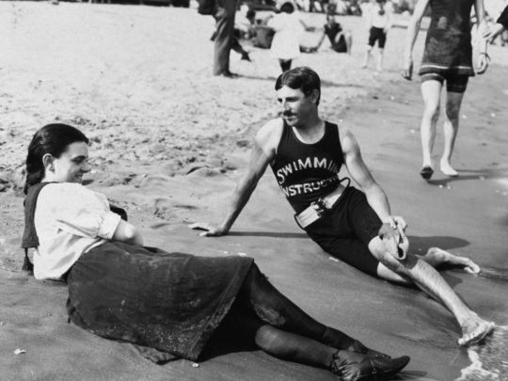

Could Nikola Tesla would have been world's first Trillionaire?
If you mean the man who really invented, in other words, originated and discovered - not merely improved what has already been invented by others, then without a shade of doubt, Nikola Tesla is the world's greatest inventor, not only at present, but in all history.
Hugo Gernsback

Living on Credit
In later years of his life Tesla spent his days in hotels in New York. In 1930, Tesla was escorted out of Hotel Pennsylvania after residents complained about the interminable droppings from his "flying rats" and because he was $2000 behind on his rent.
In desperate need for funds to pursue his ideas, Tesla did not have enough money to cover his rent on time. One morning, Tesla went into the office of Hugo Gernsback he found out that his patents for wireless technology was infringed by Westinghouse's new radio. Tesla went into Westinghouse's office and demanded royalty payments on the infringing his patents. When met with Victor Beam, assistant vice president , Tesla stated:
It would be painful to me to resort to legal proceedings against a great corporation whose business is largely founded on my inventions, and I trust that you will recognize the advantage of an amicable understanding.
As the Great Depression wore on, Tesla's expenses continued to mount. He was $400 in debt to the hotel, which, during those days was a considerable amount. He than offered as collateral "a working modal" of his death ray, which he told the establishment was worth $10,000. The device and his note were carefully placed in locker No.103 in the hotel's backroom vault.
How much he could have worth?
Tesla was not always poor. In fact, his 300 different patents brought him fame and incredible fortune in his lifetime. At his peak, he partnered with Westinghouse to compete with Thomas Edison. Edison was trying to compete with Tesla's AC current with his DC current alternative. After word spread of AC’s superior capabilities, Tesla was approached by the Westinghouse Electric & Manufacturing Company and offered a generous deal to license his technology. In 1888 Tesla met with company founder/president George Westinghouse and agreed to license his patents for the sum of $60,000, plus 150 shares of stock and a $2.50 royalty per horsepower generated by his AC motor. Tesla was also given a $2000 a month salary to work for Westinghouse, the equivalent of $48,000 per month today. Furthermore, the $60,000 lump sum was worth roughly $1.4 million in today’s dollars. But Tesla’s real windfall didn’t come from stock, salary or bonuses, it came from those royalties. As AC power slowly became more widely adopted across the country, Westinghouse happily paid Tesla hundreds of thousands of dollars in royalties each year. By 1890, just one year before his 35th birthday, Tesla had become a full fledged millionaire. To give some perspective, $1 million in 1890 would be worth a little more than $25 million today.
Contract with Westinghouse lasted for 20 years from 1888 - 1908.
Monthly salary: $2,000 * 12 * 20 = $480,000
Licencing patent with Westinghouse: $200,000
Assuming the Hydroelectric energy consumption in USA grew at the
rate of 0.1 quadrillion Btu per 5 years from 1890 to 1935.
Royalty: 3 Quadrillion BTU/ 2544.43 * $2.50 = $2.94*10^12
2.94 Trillion
From the rough calculations Tesla would make roughly 3 Trillion before he died just from the salary and royalty from his patent with Westinghouse alone. Tesla has many other patent for wireless communication, wireless electricity, radio and much more. If he had money to pursue his projects and ideas, he could have made trillions from his other ideas as well. Not to mention the amount of money he and his family could have made to this day from his patents.
Peck was the lawyer who helped Tesla licenses deal with Westinghouse and other companies. After his death Tesla was unable to find someone like Peck who could guide his inventive efforts and help sell his later inventions. Therefore, Tesla is often known for his later inability to successfully commercialize his inventions after the AC motor/power invention.